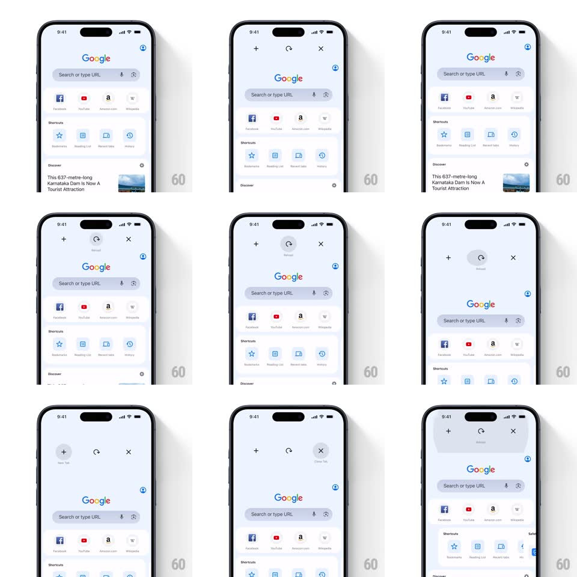

Media
Frame-by-frame

Rebuild this interaction 1:1: Chrome mobile's overscroll actions - pulling down on a page reveals three circular action buttons (new tab +, reload, close tab X) in a row; dragging the finger across them highlights each, and releasing on one fires it with a snap-back.

Rebuild this interaction 1:1: Chrome mobile's overscroll actions - pulling down on a page reveals three circular action buttons (new tab +, reload, close tab X) in a row; dragging the finger across them highlights each, and releasing on one fires it with a snap-back.
## Integration
Integration: stack-agnostic spec - springs given as stiffness/damping, timed motions as duration + curve; map every value to your framework and animation library of choice.
## Scene
A Google new-tab page. On pull-down, the page content slides down and three gray circular buttons appear in the space above it: "+" (new tab, left), circular-arrow (reload, center), "X" (close tab, right), each with a tiny label ("New Tab", "Reload", "Close Tab").
## Motion spec
Pattern: three-way overscroll radial menu.
- Pull: the page translates down 1:1 with the drag (resistance 0.5x past 60px); the three circles fade and scale in staggered center-out (reload first, then + and X, 150ms, 60ms apart) as the pull crosses ~90px.
- Drag horizontally without lifting: the finger's nearest circle highlights (gray -> dark fill, icon inverting white, 150ms) with a light haptic tick per switch; the highlight travels with the touch.
- Release on a circle: it flashes dark (120ms), the page snaps back up (spring ~380/22) and the action fires - reload spins its arrow, new tab / close tab transition the view.
- Release between circles or below threshold: circles fade out upward (200ms) and the page settles home - no action.
## Calibration
- Circles are 44px, spaced 72px apart - one-thumb horizontal travel.
- Highlight requires ~40% proximity to a circle's center; hysteresis prevents flicker between two.
## Reduced motion
Circles appear without stagger; page snaps back without spring.
## Don't miss
- The center reload appears FIRST - it's the primary, and the layout grows around it.
- One continuous gesture: pull, slide, release - lifting between steps cancels the menu.